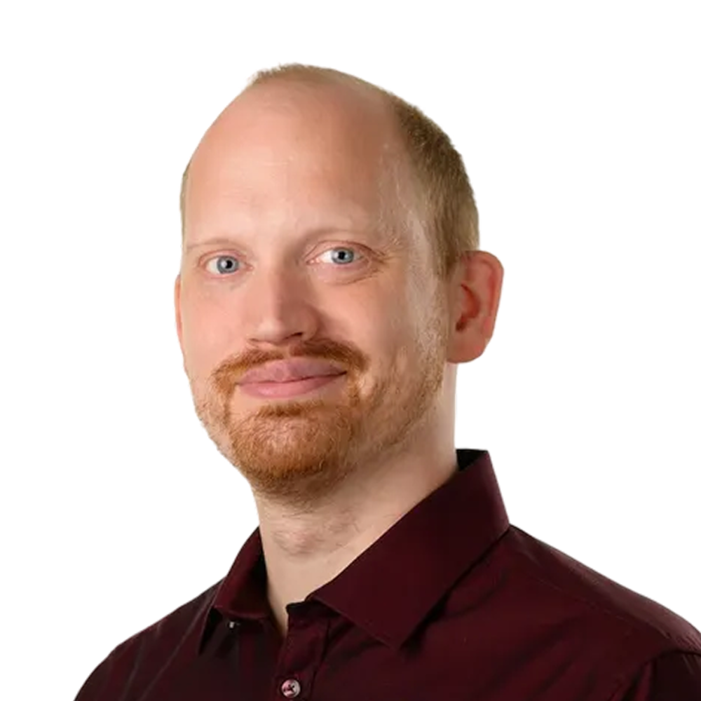

Richard Gross
Head of Software Archaeology @ MaibornWolff
Richard Gross is an IT archaeologist at MaibornWolff with more than ten years of modernization experience. His focus is on hexagonal architectures, hypermedia APIs, TestDSLs and the expressive and unambiguous modelling of the domain as code. He enjoys mastering TDD, BDD, DDD, decoupled design and even practices that don’t include two D’s. He also shaped the open source project CodeCharta, which lets even non-developers grasp the quality of their software.
Making sense of frontend code with forensic techniques
May 15 - 11:15h
In projects with hundreds of thousands of lines, it is easy to lose track of code, architecture and quality. Are we still on the right track, are we blocking ourselves with internal dependencies, or are we already stuck? Software is immaterial, we cannot see how it is doing.
In this talk, we will therefore look at the forensic techniques and tools we can use to make the quality of code and architecture tangible. The tools extract quantitative information from code, architecture, git history, and the techniques qualify these results. Put together we have accurate picture where we stand. This also supports us in having a dialog with non-technical stakeholders at eye level about the required quality.